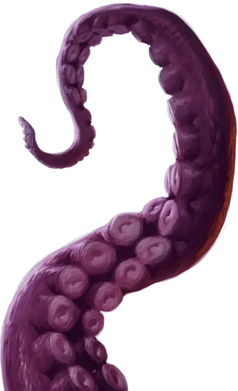

Гигантский осьминог
Giant Octopus
Большой Зверь, без мировоззрения

Класс Защиты 11 Инициатива +1 (11)
Хиты 45 (7к10 + 7)
Скорость 10 футов, Плавания 60 футов
| мод | спас | ||
|---|---|---|---|
| СИЛ | 17 | +3 | +3 |
| ЛОВ | 13 | +1 | +1 |
| ТЕЛ | 13 | +1 | +1 |
| мод | спас | ||
|---|---|---|---|
| ИНТ | 5 | −3 | −3 |
| МДР | 10 | +0 | +0 |
| ХАР | 4 | −3 | −3 |
Чувства Тёмное зрение 60 футов, пассивное Восприятие 14
Языки нет
Опасность 1 (200 опыта; БВ +2)
Особенности
Подводное дыхание. Гигантский осьминог может дышать только под водой.
Действия
Щупальца. Бросок рукопашной атаки: +5, досягаемость 10 фт. Попадание: 10 (2к6 + 3) Дробящего урона. Если цель Среднего размера или меньше, она получает состояние Схваченный (Сл освобождения от захвата 13) от всех восьми щупалец. Пока у неё есть это состояние, у неё есть также состояние Опутанный.
Реакции
Чернильное облако (1/день). Условие: Осьминог получает урон, находясь под водой. Эффект: Осьминог выпускает чернила, заполняющие 10-футовый Куб с центром на себе, после чего перемещается на расстояние вплоть до своей Скорости плавания. Этот Куб — Сильно заслонённая местность на 1 минуту или пока чернила не будут рассеяны сильным течением или аналогичным эффектом.
Бонус мастерства +2